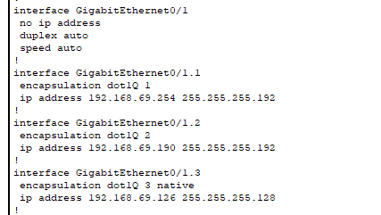

Consiste à gérer, configurer et superviser les infrastructures réseaux et systèmes informatiques afin d'assurer leur bon fonctionnement, leur sécurité et leur disponibilité pour les utilisateurs.
Dans les compétences AC11.03 (Configurer les fonctions de base du réseau local), AC11.05 (Savoir identifier les dysfonctionnements du réseau local) ainsi que dans
la compétence AC11.06 (Installer un poste client, expliquer la procédure mise en place), j'ai su configurer et mettre en place un réseau local en simulation (R1.01b et SAE1.02)
et en réel (R1.03 et SAE1.02).
En R1.01b, on a appris en simulation à configurer un réseau à l'aide du logiciel Packet Tracer. Afin de le mettre pour notre projet en SAE1.02.
En R1.03 et SAE1.02, on a utilisé de vrais outils comme les switchs, serveurs TFTP, Putty ...
A l'aide de ces différentes compétences, où on a appris à configurer un réseau local afin que les équipements d'un même réseau puissent communiquer entre eux
(configuration pc et switch).
Dans cette nouvel matière R2.01, on a appris comment configurer un routeur afin de permettre que deux réseaux distincts puissent communiquer entre eux.
Le routage statique
Ce type de routage ce configure manuellement en attribuant les routes sur les routeurs pour déterminer le chemin que les paquets de données doivent emprunter pour atteindre le réseau.
Le routage inter-vlan
Ce type de routage est une technique permettant la connection ainsi que la communication entre différents VLAN.

Configuration du NAT et du PAT
On a aussi appris à configurer le NAT et le PAT d'un réseau.
- Le PAT (Port Address Translation) est une version améliorée du NAT qui utilise aussi les
ports pour distinguer plusieurs connexions venant d’une même adresse IP publique.
Grâce au PAT, plusieurs appareils d’un réseau local peuvent partager une seule adresse IP
publique tout en gardant des connexions distinctes grâce aux numéros de port.
- Le NAT (Network Address Translation) sert à convertir des adresses IP privées en adresses
IP publiques pour permettre la communication avec Internet.
Les ACL
Les ACL (Listes de Contrôle d'Accès) sont des règles que l'on applique sur les routeurs permettant de contrôler l'accès
à un réseau.
Configuration du routage dynamique (RIP)
Le routage RIP (Routing Information Protocol) est un routage dynamique qui mesure le nombre de sauts pour déterminer le meilleur chemins entre différents réseaux.
Nous avons appris ici à configurer le routage RIP version 2, qui permet une meilleure gestion des réseaux en prenant en charge le VLSM (Variable Length Subnet Mask) qui est une technique permettant de diviser un espace d'adresse IP en sous-réseaux.